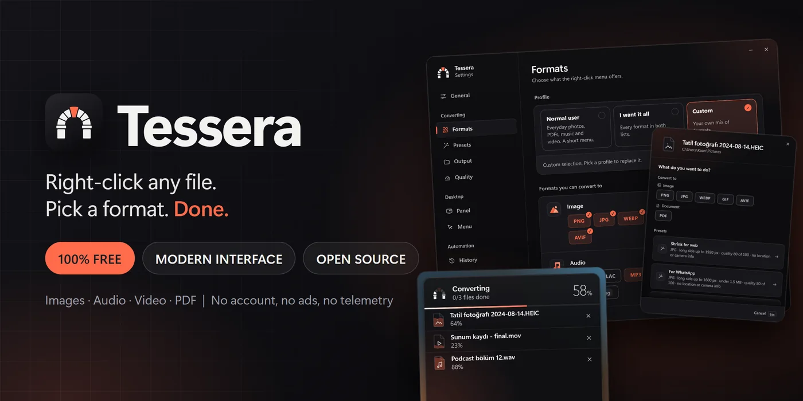
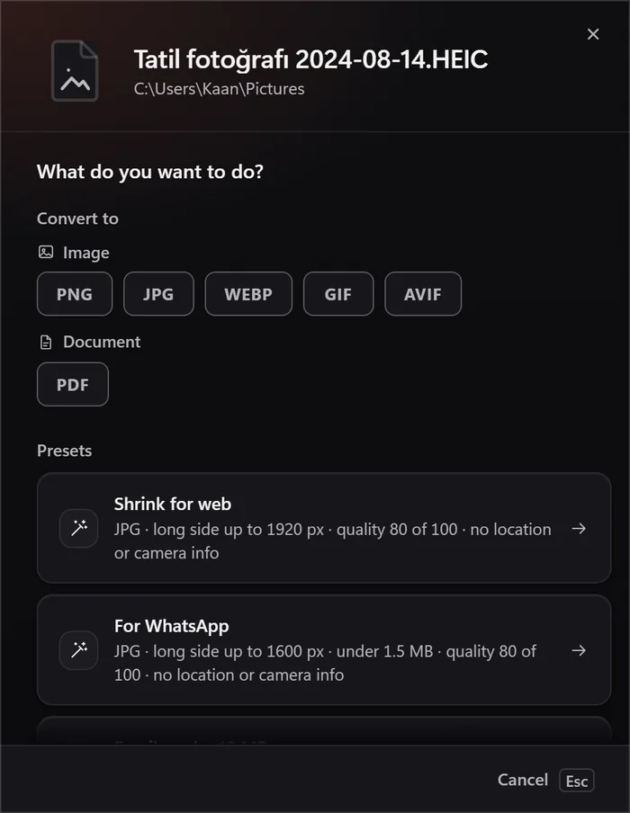
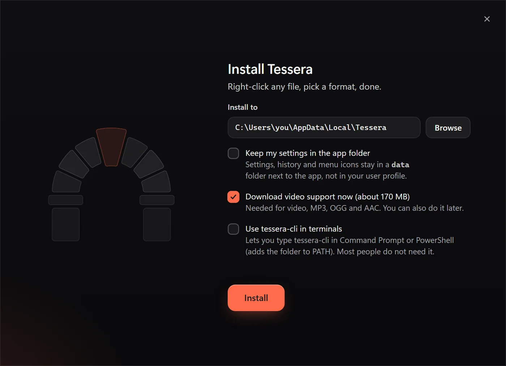
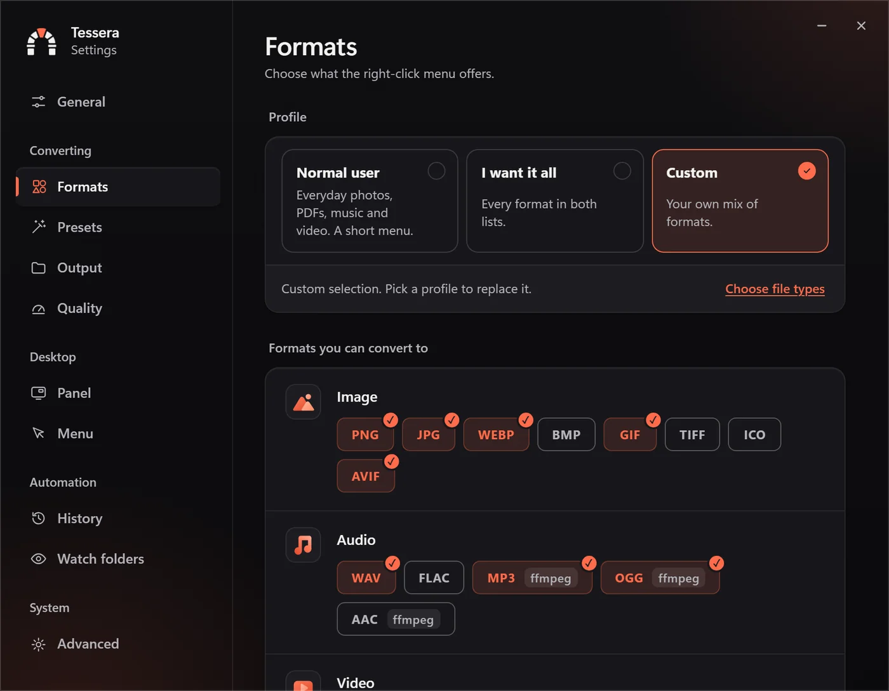

Tessera: a free file converter in the Windows right-click menu
Right-click, pick a format, done.
Converting a file should take as long as renaming it. In practice it means searching for a converter, skipping the ads, uploading a private photo to a stranger's server, or installing a suite that wants an account. Tessera is the version I wanted: you right-click the file, pick a format, and the result appears next to it. It is free, open source, and nothing leaves the computer.
It handles photos, audio, video and PDFs, and it is built around the things people actually ask for: "make this smaller for email", "turn this iPhone photo into a JPG", "cut the first minute off this recording". The whole app is one 22 MB exe.

The menu
Tessera adds a cascading menu to Explorer for each file type and for folders. It is not a shell extension DLL, which is the usual way to crash Explorer. It is plain registry verbs under the current user, each one a command line that starts the exe with the file path. That keeps it small, needs no administrator rights and makes uninstalling exact: delete the keys and nothing is left.
Every verb has an icon, drawn per kind of file, and the labels follow the Windows language. Choosing a verb starts a small progress panel in the corner of the screen. It lists each file with its own progress, and a finished row has Undo and Open folder buttons.
Converting
Images, audio and PDFs are converted in pure Rust, so a fresh install already handles them. Video, MP3, OGG, AAC and HEIC go through ffmpeg, which the installer can download as one pinned LGPL build and check against a SHA-256. Nothing else is downloaded, apart from an update check that is off until you turn it on.
The part that took the most care is size targets. "Under 10 MB" is not a quality setting, so for images the encoder searches for the best quality that fits and then shrinks the picture in steps if even the lowest quality is too big. For video and audio it works out the bitrate from the clip length and the byte budget. Targets that would make the result useless, such as 1 KB for a photo, fail with a message instead of producing a thumbnail.
Results that never grow
A converter that makes a file bigger when you asked for smaller is worse than none. Three rules came out of testing:
- A JPEG that only has to lose its metadata is copied without a second lossy pass, so stripping location data does not change the picture or the size.
- A video that is re-encoded never gets more bits than its source had, so a small clip stays small.
- A file that already fits the size limit and keeps its format is copied as it is. PDF pages built from lossless images use PNG row prediction, which brings them back to roughly PNG size.
Presets and the chooser

There are ten built-in presets (web, WhatsApp, email under 10 MB, Discord, strip location data, PDF, WebP, icon, Instagram and a mono podcast MP3) and any custom setting can be saved as a new one. The icon preset writes a real favicon with 16, 32, 48 and 256 pixel entries. Files can also be dropped on the window, folders get their own menu, and watch folders convert whatever lands in them by a rule.
One exe is the installer
I did not want a setup wizard, so the release exe opens its own installer when it is run from anywhere but its installed folder. It copies itself, registers the menu, adds a Start menu shortcut and an uninstall entry, and downloads ffmpeg with a live percentage. Updating is the same window, and it notices that ffmpeg is already there. Uninstalling opens the same window again and removes everything, including settings if you ask for it.

The logo is a Roman arch, a tessera being one of the stones of a mosaic, and the keystone is the coral one. It reappears as the progress meter: each stone fills as its share of the work is done and the keystone goes in last.
The interface

The windows are frameless with their own title controls, and the whole app uses one set of colors in dark and light. The front end is plain HTML, CSS and JavaScript with no framework and no bundler, hosted by Tauri and the WebView2 that Windows already has. That is why the exe stays small. The accessibility checker finds no violations on any window, and nothing in the UI is smaller than 12 pixels.
The command line
Everything the menu does is also a command: tessera-cli convert clip.mov --to mp4 --max-size 8MB, presets, merging images into one PDF, folders, patterns, --dry-run and --json. A GUI exe has no console, so the installer writes a second file, tessera-cli.exe, which is a copy of the first with one flag in its PE header changed from GUI to console. PowerShell then waits for it and sees the exit code.
Testing
Around 230 tests cover the converters (round trips between every image format, size targets, cuts, merges), the registry code, the installer's PATH handling and the command-line parser. A browser test suite drives the real UI files with a mocked backend.
Late in the project I had fifty AI personas try it, among them a grandmother, a blind keyboard user, an IT administrator and a security researcher. They could read the README, look at screenshots of every window and run the command line on sample files. Some of what they reported came from demo data in the screenshots, and I checked each claim before changing anything. The real findings were useful: presets that made files bigger, a dry run that showed the wrong output name, and error messages that did not say what to do next. All of them are fixed.
Limits
Windows 11 puts classic menus under "Show more options", so Tessera lives there. The exe is not code-signed yet, so SmartScreen asks once. RAW files use their embedded JPEG preview rather than a full demosaic, and a full-screen exclusive game hides the progress panel.
Why I built it
I convert files all the time and kept hitting the same wall of ads and upsells for something a computer does in a second. A converter should be a menu entry, not a business model. So this one is free, small and quiet, and the code is open.